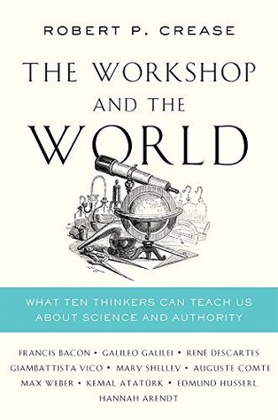

The Workshop and the World is the only required book purchase.
Other Books that have Informed this Course
Naomi Oreskes 2021 - Why Trust Science? [SWEM Online]
https://www.amazon.com/Trust-Science-University-Center-Values/dp/0691212260/
https://www.amazon.com/trial-reason-Science-Religion-Culture/dp/0198797923/
The Tragedy of American Science: From Truman to Trump by Clifford D. Conner [SWEM Online Single User] [Amazon]
https://www.amazon.com/dp/1642591270/
https://www.amazon.com/dp/0271035358
https://www.amazon.com/dp/0745689221
https://www.amazon.com/dp/0262538938
https://www.amazon.com/dp/1400078008/
What Science is and How It Really Works by James C. Zimring [SWEM Online] [Amazon]
https://www.amazon.com/dp/1108701647
https://www.amazon.com/dp/0190944684
https://www.amazon.com/dp/019530067X
https://www.amazon.com/dp/0813304520
https://www.amazon.com/dp/1138160938/
https://www.amazon.com/dp/0745651909
https://www.amazon.com/dp/0226306348
https://www.amazon.com/dp/0674059697/
Why I Am Not a Scientist: Anthropology and Modern Knowledge by Jonathan Marks. [Amazon]
Science and gender: A critique of biology and its theories on women by Ruth Bleier. [Amazon]
Scientism: The New Orthodoxy. Reprint Edition by Richard N. Williams (Editor), Daniel N. Robinson (Editor). [Amazon] [SWEM Ebook Central]
The Gender and Science Reader by Ingrid Bartsch (Editor), Muriel Lederman (Editor). [Amazon] [SWEM Stacks]
Richard Hofstadter: Anti-Intellectualism in American Life, The Paranoid Style in American Politics, Uncollected Essays 1956-1965. [Amazon]
https://www.amazon.com/dp/0061990450
https://www.amazon.com/dp/0300251858/
https://www.amazon.com/dp/0801857740
https://www.amazon.com/dp/0393310272
https://www.amazon.com/dp/0674987918
https://www.amazon.com/dp/0525436529/
https://www.amazon.com/dp/0593182510
https://www.amazon.com/dp/1118130278
https://www.amazon.com/dp/0300103069
https://www.amazon.com/Galileos-Daughter-Historical-Memoir-Science/dp/0802779654/ref=sr_1_1?crid=3FFCQGUFT6R03&keywords=galileo%27s+daughter&qid=1662817515&sprefix=galileo%27s+daugher%2Caps%2C73&sr=8-1